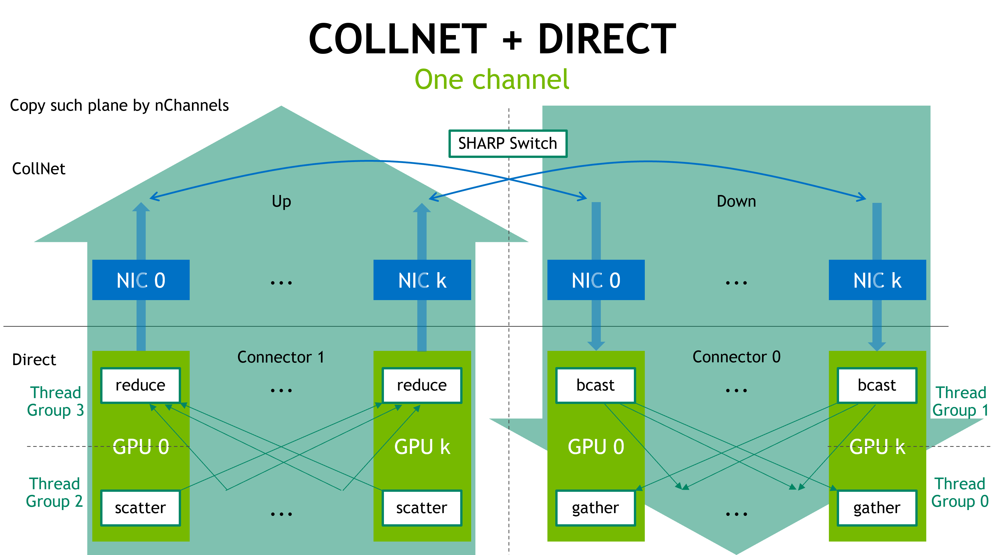
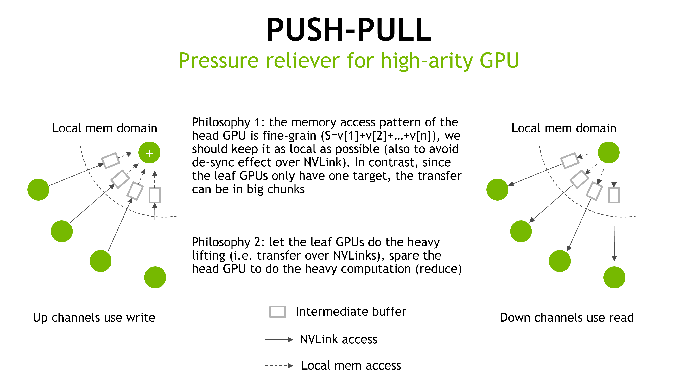

Each GPU close to the NIC will become a reduce agent. All other GPUs within the node will send their data to the reducing agent, after the reduction, the reducing agent will send the data to the network. Vice versa, in the down direction, the reducing agent acts as a broadcast agent: it receives the already-reduced data from the network, broadcasts it to all other peers within the node, and all other peers will gather the data from the broadcast agent.
When there are multiple NICs on the system, and hence multiple head GPUs acting as a reducing/broadcast agent, each head GPU takes care of a shard of the data.
On such multi-head systems, some GPU may need to simultaneously act as a scatterer, a reducer, a broadcaster and a gatherer, to ensure credit flows. Thus, the thread block needs to be split into four parts, each part corresponding to one of these roles. The thread splitting ratio depends on the workload of each role, with the reducing role being the heaviest one. In a thread block of 640 threads, each of scatter, gather and broadcast is assigned 96 threads, all the remaining threads, less the sync warps, go to reduce.
In such an arrangement, a channel no longer corresponds to a single NIC as in the chain configuration, but multiple NICs at the same time. This avoids inter-channel synchronization.
To leverage the block-level parallelism, we need to create multiple such channels, where each channel is identical. This raises a new requirement on the proxy side, where each proxy corresponds to a NIC, and we now need to aggregate the channels at the proxy. This is achieved by allocating a shared buffer at the proxy side, and each channel writes to the shared buffer at a corresponding offset. The offset pointer needs to be passed from the proxy back to the CUDA kernel. At last, the proxy sends out the aggregated message when all channels flip their flags.

To balance the workload among different thread groups, we also introduce a push-pull mechanism. The goal is to let the "multi" side do the remote transfer in the multi-to-one or one-to-multi flow pattern. Thus, the scatterer would push data to the reducer, and the gatherer would pull data from the broadcaster. This way, the reducer and the broadcaster, which have high-arity, only need to access local buffers.

Connection have a new ptrsFifo field which CUDA kernels may use in send/receive operations.
Author : Ke Wen